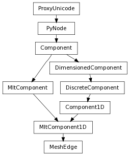

| Return type: | MeshVertex list |
|---|
This method returns the length of the current edge.
| Parameters : | space : Space.Space
|
|---|---|
| Return type: | float |
Derived from api method maya.OpenMaya.MSpace.getLength
Return the position of the specified vertex of the current edge.
| Parameters : |
|
|---|---|
| Return type: | Point |
Derived from api method maya.OpenMaya.MSpace.point
| Return type: | bool |
|---|
This method determines whether the given edge is connected to the current edge
| Parameters : | index : int |
|---|---|
| Return type: | bool |
Derived from api method maya.OpenMaya.MItMeshEdge.connectedToEdge
This method determines whether the given face contains the current edge
| Parameters : | index : int |
|---|---|
| Return type: | bool |
Derived from api method maya.OpenMaya.MItMeshEdge.connectedToFace
This method checks to see if the current edge is a border edge.
| Return type: | bool |
|---|
Derived from api method maya.OpenMaya.MItMeshEdge.onBoundary
This method determines if the current edge in the iteration is smooth (soft).
| Return type: | bool |
|---|
Derived from api method maya.OpenMaya.MItMeshEdge.isSmooth
This method returns the number of edges connected to the current edge.
| Return type: | int |
|---|
Derived from api method maya.OpenMaya.MItMeshEdge.numConnectedEdges
This method returns the number of faces (1 or 2 ) connected to the current edge.
| Return type: | int |
|---|
Derived from api method maya.OpenMaya.MItMeshEdge.numConnectedFaces
Set the specified vertex of the current edge to the given value.
| Parameters : |
|
|---|
Derived from api method maya.OpenMaya.MSpace.setPoint
This method sets the current edge to be hard or smooth (soft). The cleanupSmoothing method is no longer required to be called after setSmoothing in Maya3.0 and later versions.
| Parameters : |
|
|---|
Derived from api method maya.OpenMaya.MItMeshEdge.setSmoothing
Undo is not currently supported for this method
Signal that this polygonal surface has changed and needs to redraw itself. Derived from api method maya.OpenMaya.MItMeshEdge.updateSurface
Undo is not currently supported for this method